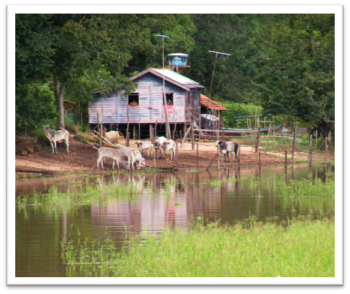
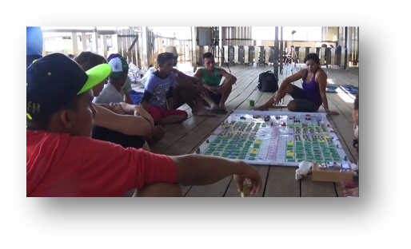
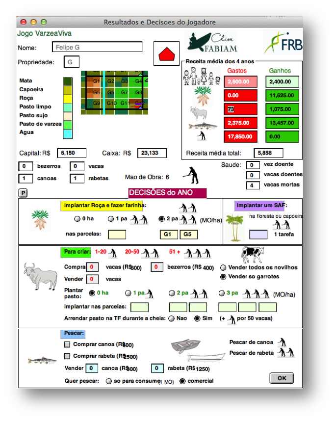

VarzeaViva
Livelihoods of local communities in an Amazonian floodplain coping with Global Changes
From Role-Playing Games to hybrid simulations to involve local stakeholders in a participatory prospective study at a territorial level
|  |
|
Purpose of the project
Thanks to their seasonal floods that recycle nutrients, the Amazonian floodplains are among the most productive and diversified ecosystems in the world. Since the pre-Columbian period, populations have settled in the floodplains and developed agricultural activities and fishing. They have always coped natural variations, between flood and dry seasons. However, the rhythm and the amplitude of these floods are disturbed nowadays, resulting in great uncertainty for the populations.
Biophysics and social scientists have joined hands to help these
populations better improve their resilience to such changes.
To address this, we first turned the perspective around the
preoccupations and strategies of local populations and
collectively discussed possible future scenarios. Using a
role-playing game (RPG) as a dialogue’s interface, an agent-based
model (ABM) was progressively built. This required finding common
points of interest, and reformulating scientific knowledge to be
meaningful for local actors.
|  | A RPG session with fishermen at Piedade |
This ABM is now a hybrid model allowing the users to interact with the simulation: they take seasonal decisions on agriculture, fishing and animal husbandry, which are virtually performed by their avatars into the model. Then, by integrating these inputs and the river level forcing variables, the simulation calculates the annual evolution of the territory and provides production outputs. Moving from RPG to hybrid simulation enables sophisticated calculations and scenarios on a broader timeframe. In return, this requires thinking carefully about the ways to interact with the simulation while providing spontaneous and informative exchanges between participants. This is the goal of our current research that aims to better understand and discuss the impacts of current practices in the long term. |
 |
An example of simulation

VarzeaViva is an hybrid ABM that has been designed and used in the Clim-Fabiam project, funded by FRB, the Foundation for Research on Biodiversity.
Software
You can download the Cormas model source code. A standAlone version is also available: varzeaViva.exe
See also this paper presented at ICCB 2015: Bommel P., Bonnet M.P., Coudel E., Haentjens E., Nunes Kraus C., Laques A.E., Melo G., Nasuti S., Souza Nogueira I.(2015). From scientific models to Companion Modelling: engaging a dialogue with local actors in an Amazonian floodplain about biodiversity management at a territorial level. ICCB: 27th International Congress for Conservation Biology - 4th European Congress for Conservation Biology. August 2-6 2015, Montpellier - France
For more information, contact the corresponding author